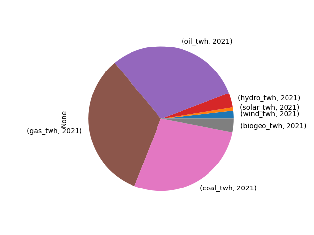

Enerji İstatistikleri
import util
df, prod_perc, tot = util.get_bp_country("Turkey")
print (df)
print ('\nProduction As Percentage of Consumption\n')
print (prod_perc)
print ('\nTotal\n')
print (np.round(tot*1000 / (365*24),2),'GW')
Year
wind_twh 2021 1.795618
solar_twh 2021 0.740097
nuclear_twh 2021 0.000000
hydro_twh 2021 3.211806
oil_twh 2021 30.255704
gas_twh 2021 33.057043
coal_twh 2021 27.915404
biogeo_twh 2021 3.024327
dtype: float64
Production As Percentage of Consumption
Perc Commodity
0 0.0 Oil
1 0.0 Gas
2 43.1 Coal
Total
197.95 GW
df.plot(kind='pie')
plt.savefig('source-pie.png')
